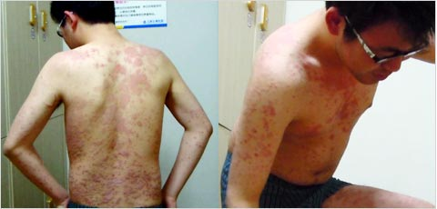
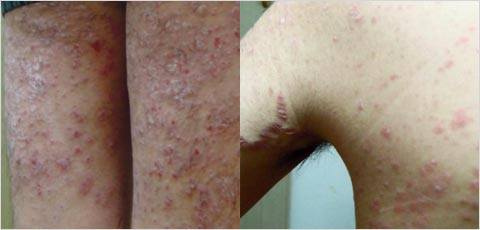
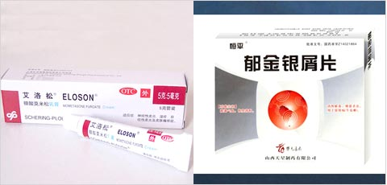
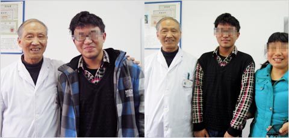
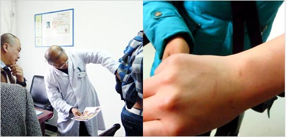
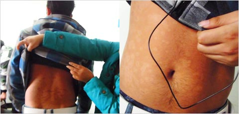
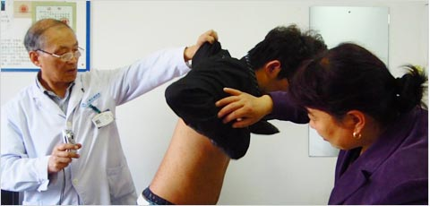
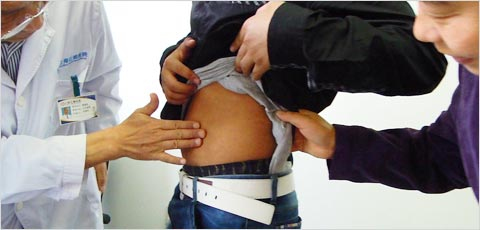
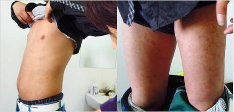

康复案例Rehabilitation case
- 2013年1月19日，在上海江城皮肤病医院13号专家诊室，顾教授接诊了一名患者。今年19岁的小林，正读大学，全身泛发的银屑病让他烦恼不已。小林说，读高三的那一年就开始发病了，擦了药膏也就没什么事了。可是没过多久，红丘疹又发出来了，还很痒。于是，去了当地一个"私人研究所"，买了药物服用后，病情却更加糟糕了。
- 
- 小林的妈妈见儿子的病越治越重，就放弃了在那个"研究所"的治疗。等到小林放了寒假，她就陪着小林慕名找到了上海江城皮肤病医院。小林的妈妈说："之前也听过上海江城皮肤病医院，也打过电话咨询的，就是没找到这个地方……后来用我们小孩的手机导航，导航过来的。我们乘地铁，那个隧道，转好几道弯子过来的。"
- 
- 在四楼治疗区，小林马上要做的治疗项目是全身中药熏蒸。他来到更衣室，脱下了衣裤，全身的皮损让笔者吓了一跳：大片的红丘疹胸前、背后、胳膊上、腿上都有。近距离看，红丘疹之上是银白色的皮屑，有多处皮屑已经掉落了，露出来一块块渗血点……当小林转过身，顾教授一眼就看见了长在他左侧腋窝附近的膨胀纹，就像产后女人的妊娠纹。"这个纹，恢复不了，别的能治好，膨胀纹已经断掉了，药物解决不了。"
- 
- "原来我以为是他打球的时候，可能是皮肤绷的，他喜欢运动嘛，打篮球，我以为是这样的。"提到儿子腋窝的膨胀纹，小林的妈妈恍然大悟，"没有想到是用什么激素药，我也不懂。我们只知道，只要是治这个银屑病，能治好就买过来了，就擦了，就这样了。"
- 
- 2013年3月23日，寻常型银屑病患者小林在妈妈的陪同下，来到上海江城皮肤病医院，请顾昌林教授复诊病情。距上次初诊，时间已经过去两个月零七天，小林的妈妈笑得合不拢嘴说："现在身上好多了，就快全好了！"
- 
- 诊室里一个刚刚来初诊的牛皮癣患者（图中短发男士），他手捻下巴，很是认真，仔细观瞧。看得出来，他很想知道，这个小伙子的康复效果如何，看看顾教授的医术到底怎么样。顾教授一手拿着小林初诊患部照片，一手撩起小林的外衣，一个部位一个部位的进行现场疗效对比。那个初诊男患者，一边看，一边惊讶，一边点头……
- 
- "现在好了，你看！"一看大家都想看治疗效果，小林的妈妈就高兴地帮着撩起小林的棉外衣，露出原来发病症状最重的腰背、胸腹等部位，只见初诊时大片大片的红丘疹、银色皮屑、吓人的渗血点都没有了，治疗效果良好，真是可喜可贺！
- 
- 2013年4月28日，距离上次复诊又一个月过去了，牛皮癣患者小林在妈妈陪同下，再次从江苏老家来到上海江城皮肤病医院：一是为了遵照医嘱定期复诊病情，二是母子二人有个强烈的愿望，就是要表达一下对顾昌林教授高尚医德和高超医术的诚挚感谢。
- 
- "身上都好了吧？"顾教授一边问，一边伸手摸摸小林的肚皮。顾教授还是坚持同样的望闻问切"老习惯"：要亲眼看一看，亲手摸一摸。这就是一位年近古稀的老专家大医精诚，实事求是，求真务实的作风，对患者高度负责，可亲可敬！与初诊时相比，小林腰背胸腹部疙疙瘩瘩的大片红丘疹早就消退了，病灶处现在皮肤都已平滑，皮屑也全褪尽了。顾教授亲手摸完后，点点头说："你这个还是蛮好的，恢复的蛮好的。"
- 
- 小林胸腹腰背部痊愈照片，丘疹皮屑都没了，印子暂时还没褪尽。对于小林全身红丘疹消退后留下的色素印子，他的妈妈试探着问顾教授："这个印子以后会消的，是吧？"顾教授笑呵呵地看着她，胸有成竹地答道："肯定会消的！三到六个月左右，它就慢慢淡了。"听到顾教授肯定的回答，小林的妈妈打消了顾虑。